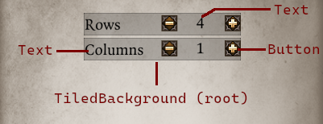
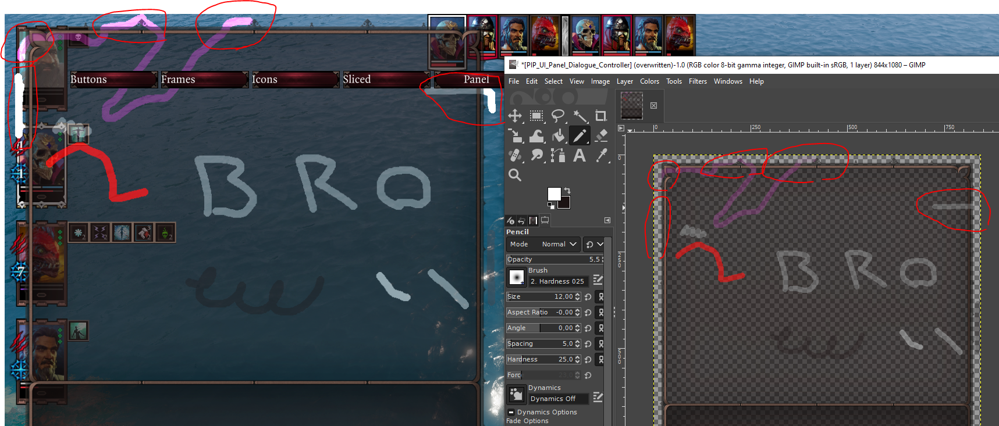

Generic¶
Generic is a framework for creating UIs using just lua scripting. It functions by instancing a special .swf with various types of elements implemented that you can then interface with from lua.
It offers various advantages over traditional UI creation:
- No fiddling with flash: UI creation with Generic uses purely lua. You do not need to touch or know anything about flash files.
- Extendability and moddability: UIs made with Generic, along with their elements, are exposed to all mods; any script can hook these UIs to add elements to them or modify them, something not possible with .swf UIs.
- Fast prototyping: all you need to do to test your changes to your UIs is to reload lua. There is no requirement for external tools nor any exporting process.
- Reusability: "prefabs" with custom APIs can be created to work with groups of elements in a reusable manner across different UIs, and offered to mods that use yours as a dependency.
Generic powers every UI in Epip made after its inception, including:
- Quick Examine
- Hotbar Groups
- Save/Load Overlay
- Debug Display
- Debug Menu / Control Panel
- Fishing minigame
- Quick Find
- Settings menu (partially)
- Bedazzled (match 3 minigame)
Getting started¶
Call Generic.Create() to create a new UI.
Generic UIs are composed of elements; these can be interactable controls (such as buttons), visual elements (backgrounds, icons) and containers (lists and grids of elements).
You can add elements to your UI by calling CreateElement():
-- Creates a tiled background element.
-- All elements must have a unique string ID.
local background = ExampleUI:CreateElement("MyBackground", "GenericUI_Element_TiledBackground")
Elements are lua objects with methods and events to interface with them - all elements share basic getters/setters for properties like position, and offer additional calls based on their intended purpose.
Parenting elements is supported. Parented elements use positioning relative to their parent, as would be in regular flash, and inherit certain other properties like visibility. To create child elements, you can pass an element (or its ID) as a third parameter to CreateElement() or call AddChild() on an existing element reference:
-- Adds a button
local closeButton = background:AddChild("CloseButton", "GenericUI_Element_Button")
closeButton:SetType("Close") -- Sets the appearance
-- Put the button in the top right corner of the parent element (MyBackground) with a 20px offset on both axes
closeButton:SetPositionRelativeToParent("TopRight", -20, 20)
All elements implement basic mouse-related events (entering, exiting, press, release) as well as high-level ones based on the element's purpose.
Text is available via the GenericUI_Element_Text element:
local header = background:AddChild("MyHeader", "GenericUI_Element_Text")
header:SetText(Text.Format("My UI", {Color = Color.BLACK}))
header:SetSize(400, 50)
header:SetPositionRelativeToParent("Top", 0, 60) -- Sets the header's position to the top center of the panel, with a 60px offset from the top
-- "Pressed" event is akin to the general MouseUp event, but only fires if the button is not disabled.
closeButton.Events.Pressed:Subscribe(function (_)
-- Close the UI when the button is pressed
ExampleUI:Hide()
end)
Generic UI elements have no lifetime restrictions and references to them may be stored and used at any time. You can store them within your UI table for convenient access, but this is not a necessity if moddability is a concern - your UI, as well as all of its elements, are always available to other modders through their string IDs. These IDs are valid within your UI only and therefore need not be prefixed.
-- Other modders can access your UI by its string ID
local yourUI = Generic.GetInstance("PIP_ExampleUI")
local yourAcceptButton = yourUI:GetElementByID("AcceptButton")
-- And they may interface with them just as you would
yourUI:CreateElement("MyNewElement", "GenericUI_Element_IggyIcon")
yourAcceptButton:SetVisible(false)
Internally, Generic UIs are no different from regular UIs - there is a UIObject for each UI, and its elements exist within it as flash MovieClips. Access to all these is available.
-- Direct access to UIObject and MovieClip is available
print(ExampleUI:GetUI())
print(acceptButton:GetMovieClip())
-- GenericUI instances inherit from the same class as built-in UIs in Epip
print(ExampleUI:IsFlagged("OF_PlayerInput1"))
The code in this section is from an example UI in Epip/Examples/GenericUI.lua.
Warning
Though accessing an element's MovieClip is possible, its purpose is for internal & debug usage only. Interfacing with elements outside of their public APIs is not supported and any such use is prone to breaking in future releases with no warning.
Elements¶
The following element types are implemented:
- Empty: an element with no visual presence. Ideal for anchoring or as a root for custom container prefabs.
- Texture: displays a texture resource.
- Text: displays a text field, optionally user-editable.
- IggyIcon: displays an Iggy icon - an icon from a texture atlas.
- Color: displays a solid color.
- ComboBox: implements a combobox (dropdown).
- Slider: implements a slider.
- Slot: implements a hotbar-like slot, with cooldown/refresh animations. See
GenericUI_Prefab_HotbarSlotfor a ready-to-use inventory-like slot.
Worthy of distinction are the following "container/list" elements, whose purpose is to position their children in a specific layout:
- VerticalList: positions elements along the vertical axis. Equivalent to Larian's
listDisplay. - HorizontalList: positions elements along the horizontal axis. Equivalent to Larian's
horizontalList. - ScrollList: positions elements along the vertical axis and has a set frame size; overflowing elements can be accessed by scrolling the viewport with a scrollbar. Equivalent to Larian's
scrollList. - Grid: positions elements in a grid composed of rows and columns of elements. Equivalent to Larian's
grid.
You can read up about them on their dedicated pages.
The following element types also exist, but are deprecated in favor of Prefab-based solutions:
- Button: replaced by
GenericUI_Prefab_Button. - StateButton: a button with 2 states (inactive/active). Replaced by
GenericUI_Prefab_Button. - Divider: replaced by Texture element and SlicedTexture prefab.
- TiledBackground: a 9-sliced resizable background. Replaced by SlicedTexture.
These elements continue to exist for backwards compatibility, but their usage in newer UIs is discouraged.
Prefabs¶
Prefabs are classes which initialize and manage groups of elements; they allow complex pieces of UIs to be reused efficiently, being analogous to ex. Fragments in Android UI development.
Typically, prefabs have a public constructor which takes UI, ID and parent parameters, creates & initializes its elements, and returns an instance of the prefab class.
Prefabs implement high-level, contextual APIs to interact with their elements indirectly - ideally the user should not need to consider how the prefab is structured in terms of actual elements; the prefab manages its hierarchy of elements.
The Spinner prefab for example implements a spinner form element; the user may use the -/+ buttons to decrement/increment a value, and that value can be queried using :GetValue() on the prefab instance. This Spinner is composed of Text and Button elements, as well as a background.

A prefab in itself is not an element, but may implement the Elementable interface to allow calling Element methods on them, by specifying the target element (most commonly the root of the prefab).
The Stylable interface allows customizing the appearance of prefabs through styles consisting of textures, sounds, and other assets/parameters. Each prefab using this interface declares its own style class with possible customizations. If a prefab does not use this system, you can of course always tweak the elements yourself directly.
Limitations, considerations and observations¶
Sprite-based animations¶
There is currently no convenient way of creating animations that involve multiple animation sprites. Two solutions have been theorized, but their practicality is untested:
- Animate the Texture element: this appears to be the most straightforward option (and already possible); the obvious inconvenience being the need to import every frame of your animation as a separate texture resource. The performance of repeatedly calling
:SetTexture()has also not been investigated. - Implement a custom element: it is theoretically possible to implement a custom flash element in Generic, importing its script and Sprite from another
.swf. You could setup your animation in the.swfas you'd normally do in flash and create a simple element to instantiate it from Generic. This approach has the massive problem of flash library slots being limited; there's only a few available slots for custom libraries, and they would have to be registered in advance within Generic's swf (ex. useImportAssetsto import "Custom1.swf", "Custom2.swf", and have the user override those to provide their custom elements).
Stutters when creating hundreds of elements at a time¶
Creating MovieClips programmatically appears to be the major performance bottleneck in Generic/Iggy. UIs that instantiate hundreds of elements at once will likely see noticeable stutter during that process. The performance of these UIs afterwards is normal.
The major UIs that suffer from this are inventory-like UIs, due to the Slot element being particularly complex and consisting of multiple parts. In v1066, measures have been taken to minimize the amount of DisplayObjects created - certain aspects of Slots such as the cooldown animation are now only created on-demand, resulting in a 30-35% performance improvement when creating Slot elements that do not use all of its features.
No further possible major improvements are known. It's worth noting that the problems lies within class instantiation and not Generic itself; vanilla UIs such as PartyInventory and Craft experience similar stutters when needing to create a ton of slots/recipes.
A possible workaround for this is to create your elements during the load screen, however this will inflict the resulting "stutter" as extra loading time for the user. Epip prefers initializing UIs on-demand; that is, the UI basically doesn't exist until it is necessary.
When working with UIs where this is a concern, it is recommended to implement a pooling system to reuse elements. Avoid clearing and re-creating lists of hundreds of elements - instead reuse existing instances.
QuickInventory and Codex sections that inherit from Features.Codex.Sections.Grid are good examples of implementing pooling for an inventory-like UI, massively improving responsiveness after the creation of the elements.
Testing¶
Since user interaction in Generic is driven through events in Lua, it's theoretically possible to implement instrumented tests for UIs by invoking those events to spoof user interaction.
Wrong container size when using prefabs¶
Container size is by default recalculated upon adding an element; in the case of adding prefabs, this happens when the root of the prefab is added. As such, the container will use the size of the first element created by the prefab, before any other element creation or calls. To address positioning issues, you should call RepositionElements() on the container after all elements are added and initialized. Disabling auto-positioning with SetRepositionAfterAdding() in this case might improve performance.
Overlay UIs¶
Though overlay UIs are an overall good solution to extending vanilla UIs, regular ones made in Flash still have moddability issues. Two mods overlaying the same part of a UI is gonna result in a visual conflict with both of them overlapping.
The recommended solution for this problem in Generic (assuming both mods are using it) is to insert elements of one overlay UI onto the other as a compatibility measure.
If you have mod A and B both with an overlay UI that extends a similar area of the vanilla UI, mod B could check for mod A being loaded and if it is, instead of creating its own overlay UI, mod B could add its own overlay elements into the Generic UI of mod A.
This of course only works reliably if mod A offers a stable UI structure, which is why it's not recommended to change element IDs or keys of element references in the UI table in new versions of your mod.
With that in mind there is little reason to create overlay UIs for Generic UIs. It is far simpler and reliable to simply insert your elements within the UI itself.
Colored translucency in textures¶
Textures with low alpha and colored (non-grayscale) areas just don't appear to render correctly. The low-alpha areas will appear much brighter than expected and may exhibit strange blending with UIs below it. DDS color format and compression chosen doesn't seem to have an effect on this; it is suspected to be either an Iggy bug or a bug within the texture-to-bitmap engine function.

Textures with black dropshadows or brownish backgrounds like the one in the example screenshot appear fine. The exact alpha+color combinations that cause this issue are unknown.
GenericUI Class¶
Inherits from Feature.
Methods¶
Create¶
@param id string
@param layer integer? Defaults to `DEFAULT_LAYER`.
GetInstance¶
Returns the instance of a Generic UI by its identifier.
@param id string|integer String ID of the UI or its TypeID.
GetPrefab¶
@param className `T`|GenericUI_PrefabClass
Inherit¶
@param tbl1 table
@param tbl2 table
RegisterElementType¶
@param elementType string
@param elementTable GenericUI_Element
RegisterPrefab¶
Registers a prefab.
@param id string
@param prefab table